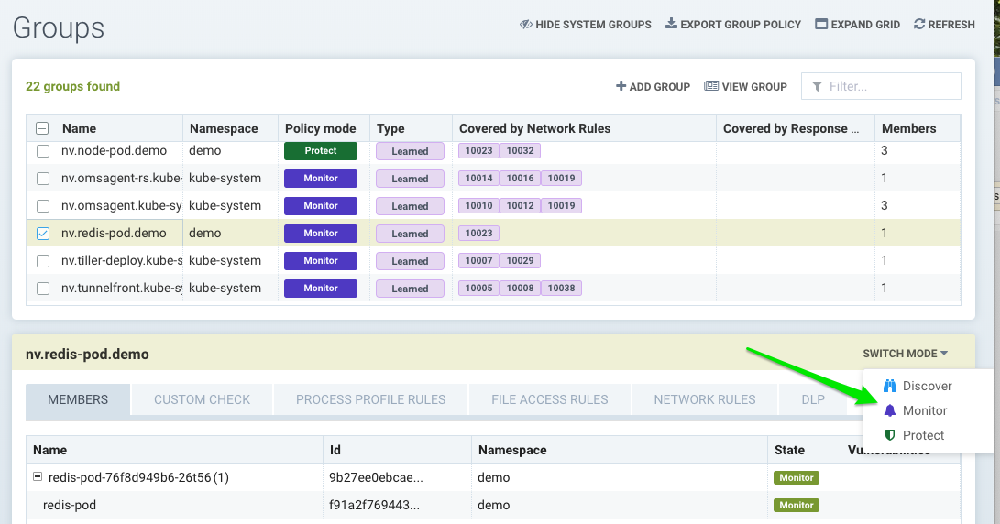
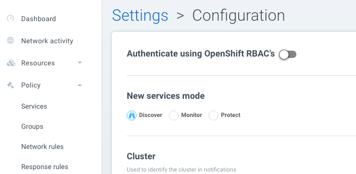
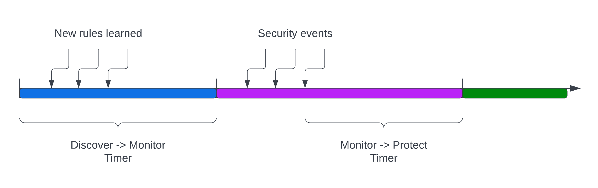

方式：发现、监控、保护
SUSE® Security 模式
SUSE® Security 违规检测模块有三种模式：发现、监控和保护。在任何时候，任何组（以’nv’开头或’节点’组）都可以处于这些模式中的任何一种。可以通过组菜单、网络活动视图或仪表板切换模式。容器组可以在与网络规则不同的模式下拥有进程/文件规则，如这里所述。

|
自定义创建的组没有保护模式。这是因为它们可能包含来自不同基础组的容器，每个容器可能处于不同的模式，从而导致行为上的混淆。 |
发现
默认情况下，SUSE® Security 从发现模式开始。在此模式下，SUSE® Security：
-
发现您的容器基础设施，包括容器、节点和主机。
-
通过观察容器之间的对话（网络连接）来了解您的应用程序和行为。
-
识别正在运行的独立服务和应用程序。
-
自动构建网络规则的白名单，以保护正常的应用程序网络行为。
-
为每个服务基准化在容器中运行的进程，并创建白名单进程控制文件规则。
|
要确定在发现模式下运行服务的时间，请通过应用程序运行测试流量，并检查所有规则的完整性。几个小时应该足够，但某些应用程序可能需要几天才能完全测试。在有疑问时，切换到监控模式并检查违规行为，这些行为可以在转到保护模式之前转换为白名单规则。 |
在模式之间切换
您可以轻松地将 SUSE® Security 组从一种模式切换到另一种模式。请记住，在发现模式下，SUSE® Security 正在为允许的正常容器行为构建安全策略。您可以在策略 → 组标签中或在策略 → 网络规则菜单中详细查看这些规则。
当您从发现模式切换到监控模式时，SUSE® Security 将标记所有未明确允许的正常行为的违规行为。因为 SUSE® Security 根据具有相似属性的应用程序和组来执行策略，所以在扩展或缩减容器时通常不需要添加或编辑规则。
请确保在引入导致容器之间新类型连接的新更新之前，将受影响的服务切换到发现模式以了解这些新行为。或者，您可以在任何模式下手动添加新规则，或编辑用于创建规则的 CRD 以添加新行为。
新服务模式
如果通过SUSE® Security发现新服务，例如一个之前未知的容器开始运行，可以将其设置为默认模式。在发现模式下，SUSE® Security将开始学习其行为并建立规则。在监控模式下，当检测到与新服务的连接时，将生成违规。在保护模式下，除非之前已创建规则，否则将阻止与新服务的所有连接。

网络服务策略模式
在设置→配置中有一个全局设置，可以单独设置网络保护模式以执行网络规则。启用此功能（默认禁用）会使所有网络规则处于所选的保护模式（发现、监控、保护），而进程/文件规则保持该组的保护模式，如策略→组屏幕所示。通过这种方式，网络规则可以设置为保护（阻止），而进程/文件策略可以设置为监控，反之亦然。
组模式的自动提升
根据经过的时间和标准提升组的保护模式。此自动化不适用于CRD创建的组。此功能允许新应用程序在发现模式下运行一段时间，学习行为并为网络和进程SUSE® Security创建白名单规则，然后自动转到监控模式，再到保护模式。
从发现模式转到监控模式的标准是：学习组中至少一个活动pod的所有网络和进程活动的经过时间。例如，如果设置为7天，则在检测到该组的运行pod后7天，模式将自动提升到监控。
从监控模式转到保护模式的标准是：在为该组设置的时间范围内没有安全事件（网络、进程等）。例如，如果设置为14天，则如果在14天内没有触发违规（网络、进程、文件）（例如安静期），则模式将自动提升到保护。如果组中没有运行的pod，则不会发生提升。
